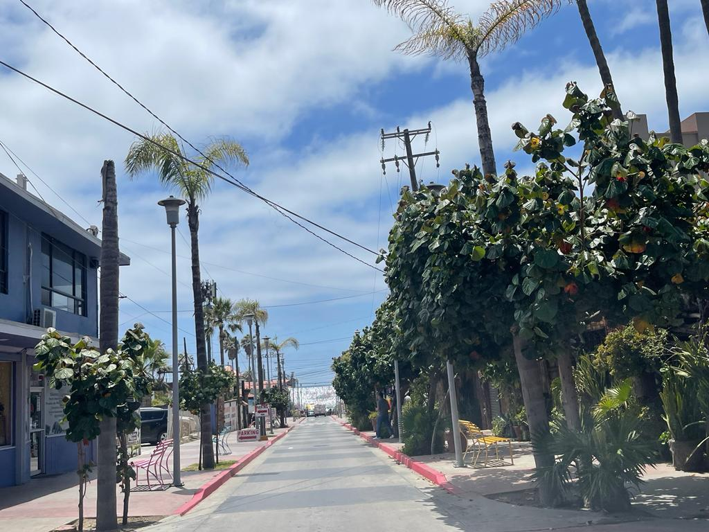
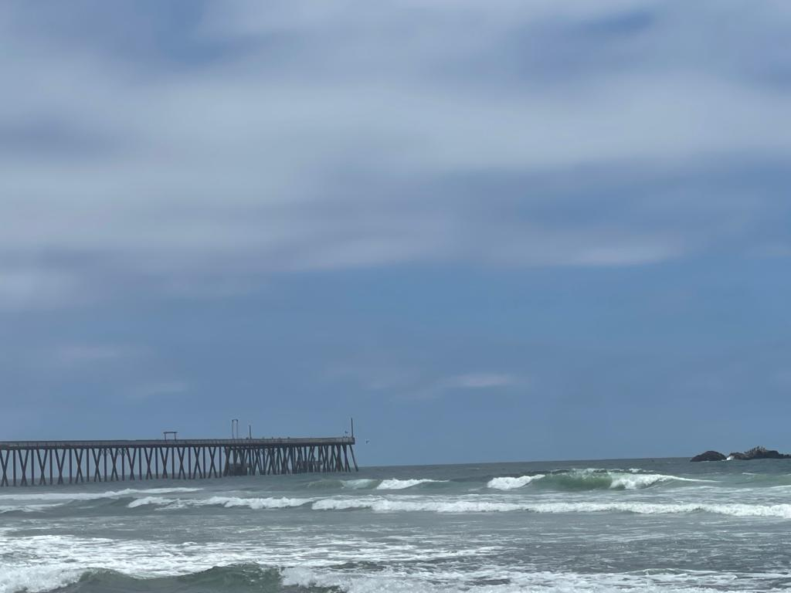
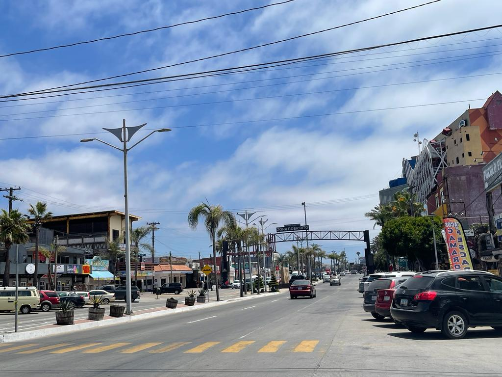

Mi Casita junto al mar se encuentra a 15 minutos en coche de la frontera internacional de EE. UU.
sd
Mi Casita junto al mar esta se encuentra a 20 minutos en coche de Rosarito, ubicado a 5 minutos en coche de El Toreo.
Ubicado a pocos metros de Playas de Tijuana, es importante mencionar que las playas de Tijuana están influenciadas por la corriente de California, que proviene del océano Pacífico. Esto hace que el agua del mar sea fresca, con temperaturas que suelen oscilar entre los 16°C y los 20°C durante todo el año. Sin embargo, en verano, el agua puede ser un poco más cálida y confortable para nadar.
Mi Casita junto al mar se encuentra a 20 minutos en coche de Rosarito, ubicado a 5 minutos en coche de El Toreo.
Ubicado a una hora con treinta minutos (1h 30min) de Ensenada, lugar que se caracteriza por una impresionante belleza natural, con kilómetros de costa, playas de arena dorada y aguas cristalinas.
Ubicado a una hora con treinta minutos (1h 30min) de Valle de Guadalupe, lugar que se caracteriza por su producción de vinos de calidad, su hermoso paisaje, la presencia de numerosas bodegas y viñedos, su gastronomía destacada y el crecimiento del turismo enológico.